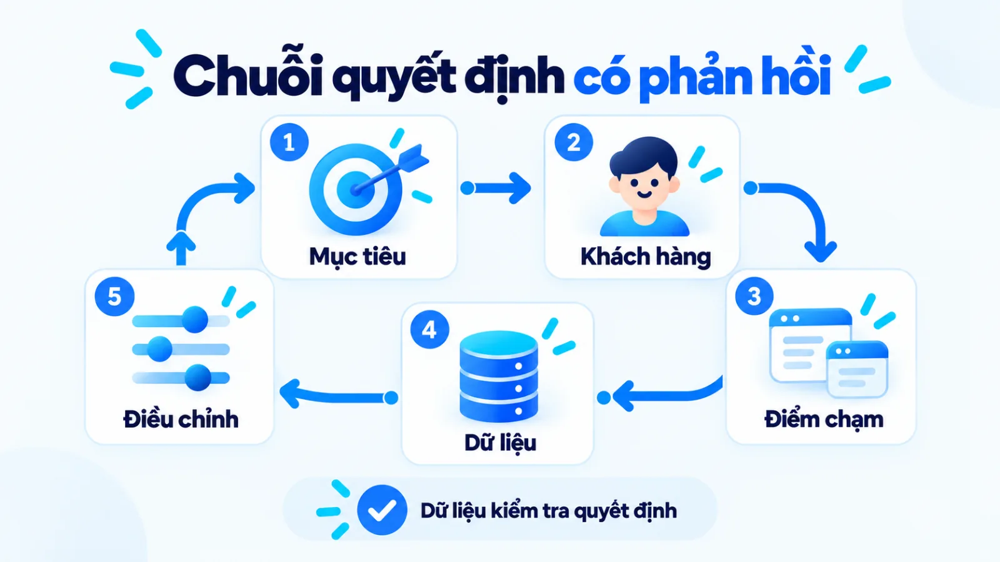
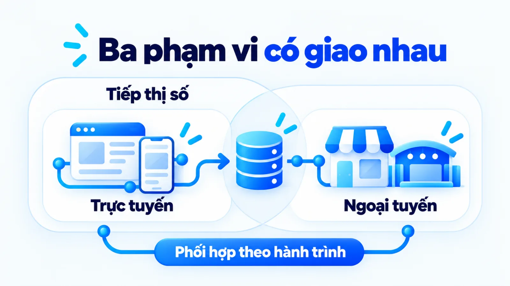
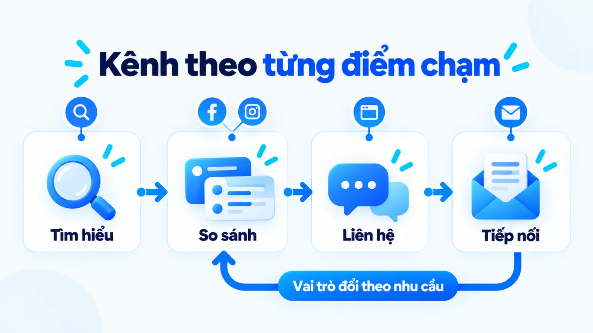
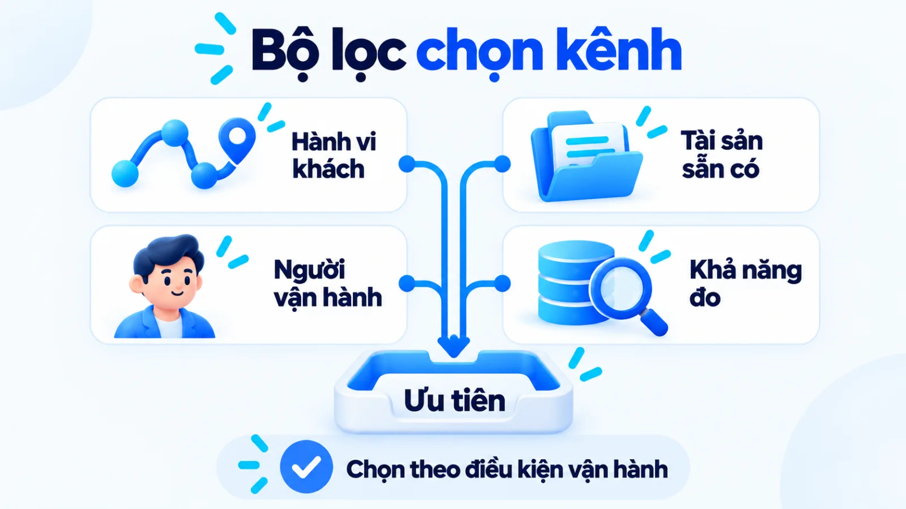
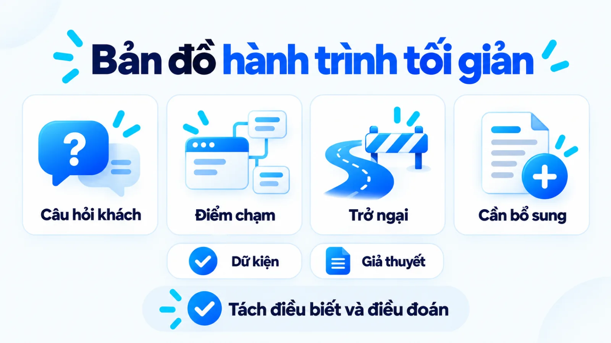
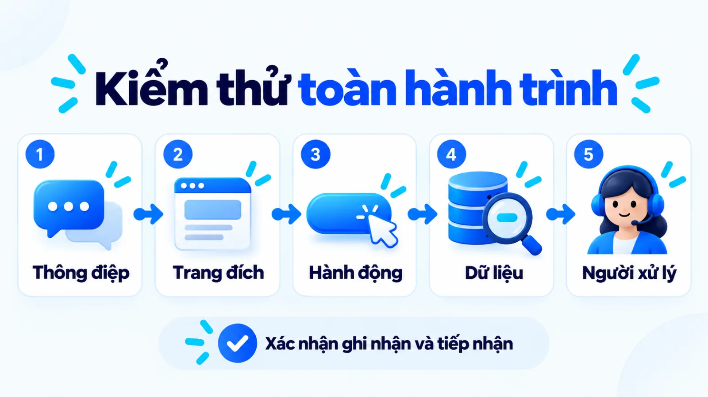
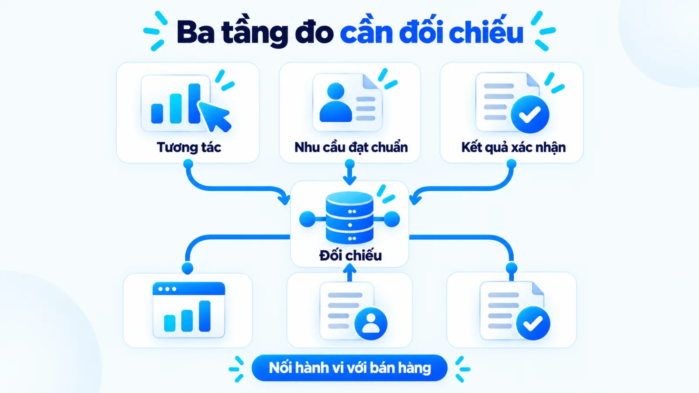
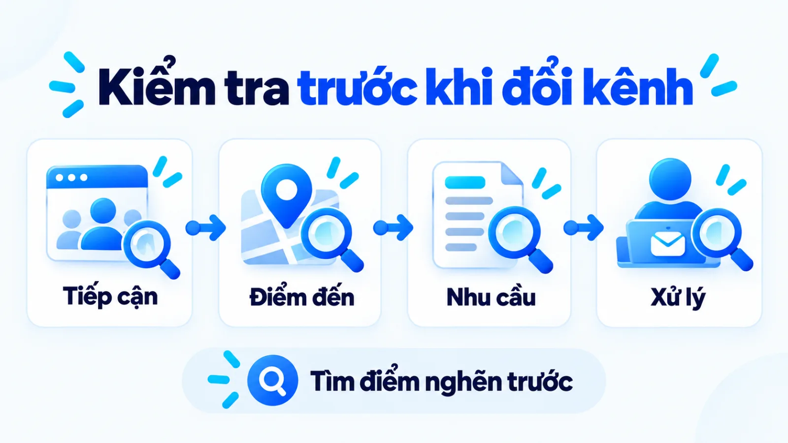

Digital Marketing là gì? Cách chọn kênh và đo hiệu quả
Digital marketing là hoạt động sử dụng công nghệ, nền tảng và dữ liệu số để tiếp cận, phục vụ khách hàng và hỗ trợ mục tiêu kinh doanh. Tôi là Lê Tuấn Việt, Marketing Leader tại TAKI Group. Bài viết giúp doanh nghiệp vừa và nhỏ phân biệt phạm vi, chọn kênh vừa sức và nối tín hiệu tương tác với nhu cầu phù hợp cùng kết quả đã xác nhận.
- Đăng ngày
- Cập nhật

Tóm tắt nhanh
- Marketing online tập trung vào môi trường Internet; phạm vi tiếp thị số trong bài được hiểu rộng hơn và có phần giao với điểm chạm ngoại tuyến.
- Kênh đáng ưu tiên phải phù hợp với hành vi khách hàng, tài sản sẵn có và khả năng xử lý nhu cầu của doanh nghiệp.
- Tương tác, nhu cầu đạt chuẩn và kết quả kinh doanh cần được đọc riêng, rồi đối chiếu trong cùng kỳ đo.
- Chỉ mở rộng hệ kênh khi dữ liệu cho thấy thiếu độ phủ, sau khi đã kiểm tra thông điệp và khâu tiếp nhận.
Mục lục bài viết9 phần
Digital marketing là gì trong hoạt động Marketing?
Digital marketing là phần hoạt động Marketing sử dụng công nghệ, thiết bị, nền tảng và dữ liệu số để tạo, truyền đạt và cung cấp giá trị cho khách hàng. Phạm vi này bao gồm việc thu hút, hỗ trợ quyết định và duy trì quan hệ, gắn với mục tiêu kinh doanh.
Định nghĩa được American Marketing Association phê duyệt năm 2017 đặt trọng tâm vào quá trình tạo và trao đổi giá trị. Vì vậy, tiếp thị số nằm trong hệ thống Marketing, cùng chịu ảnh hưởng của sản phẩm, giá, cách phân phối và khả năng phục vụ khách hàng.

Cách gọi digital mkt là dạng viết ngắn của cùng khái niệm. Điều cần hiểu là quan hệ giữa các quyết định: mục tiêu xác định hành động cần tạo; khách hàng quyết định thông tin cần có; kênh đưa thông tin tới điểm chạm; dữ liệu giúp kiểm tra hành động có thực sự xảy ra.
Digital marketing khác marketing online và truyền thống thế nào?
Trong bài này, marketing online chỉ hoạt động cần môi trường Internet; tiếp thị số có phạm vi rộng hơn, còn tiếp thị truyền thống chủ yếu dùng điểm chạm ngoại tuyến. Đây là quy ước thực hành để chọn cách triển khai, không phải ranh giới được mọi tài liệu thống nhất tuyệt đối.
Mục tổng quan của Oxford University Press mô tả sự phát triển từ tiếp thị trực tuyến sang lĩnh vực chiến lược rộng hơn. Khi đọc tài liệu hoặc nhận báo giá dùng chữ mkt online, doanh nghiệp nên làm rõ phạm vi công việc thay vì chỉ đối chiếu tên gọi.
Bảng dưới giúp xác định môi trường triển khai và phần việc cần phối hợp giữa các nhóm.
| Khái niệm | Phạm vi | Kết nối và phối hợp |
|---|---|---|
| Tiếp thị số | Công nghệ, thiết bị, nền tảng và dữ liệu số | Có thể gồm điểm chạm không kết nối Internet thường trực |
| Tiếp thị trực tuyến | Hoạt động trong môi trường Internet | Cần kết nối để phân phối hoặc tương tác trực tuyến |
| Tiếp thị truyền thống | Điểm chạm vật lý và phương tiện ngoại tuyến | Có thể dẫn khách sang điểm đến số và nhận dữ liệu phản hồi |

Khả năng đo phụ thuộc vào thiết kế thu thập và đối chiếu dữ liệu. Điểm chạm ngoại tuyến vẫn có thể ghi nhận giao dịch; hoạt động trực tuyến vẫn có thể thiếu nguồn hoặc mất dấu khi khách chuyển thiết bị.
Các kênh giữ vai trò gì trong hành trình khách hàng?
Kênh nên được phân nhóm theo nhiệm vụ trong hành trình khách hàng: giúp được tìm thấy, tạo tiếp cận hoặc nuôi dưỡng nhu cầu. Một kênh có thể phục vụ nhiều nhiệm vụ, nhưng từng hoạt động cần có vai trò chính và hành động mong đợi.
Nielsen Norman Group mô tả bản đồ hành trình theo quá trình một nhóm khách hàng đi tới mục tiêu. Góc nhìn này giúp phát hiện chỗ khách thiếu thông tin hoặc gặp trở ngại khi chuyển từ điểm chạm này sang điểm chạm khác.
- Khả năng được tìm thấy: Kênh tìm kiếm giúp tiếp nhận nhu cầu đang có. SEO, tức tối ưu hóa công cụ tìm kiếm, hỗ trợ nội dung được hiểu và tìm thấy.
- Tiếp cận và tương tác: Mạng xã hội và quảng cáo giúp đưa thông điệp tới nhóm cần tiếp cận. Nội dung cần phù hợp với bối cảnh họ đang sử dụng kênh.
- Nuôi dưỡng và hành động: Email cùng trao đổi trực tiếp hỗ trợ giải đáp băn khoăn và tiếp nối nhu cầu đã được ghi nhận.
- Điểm đến tiếp nhận nhu cầu: Website hoặc trang đích tập hợp thông tin và hướng dẫn hành động. Giá trị phụ thuộc vào chất lượng nội dung và khả năng xử lý phản hồi.

Google Search Central giải thích vai trò của SEO trong việc giúp công cụ tìm kiếm hiểu nội dung và người dùng tìm thấy website. Nội dung là tài sản dùng xuyên kênh; CRM, tức hệ thống quản lý quan hệ khách hàng, là lớp lưu và theo dõi nhu cầu.
Để thông điệp nhất quán khi đổi điểm chạm, cần thống nhất brand voice và tone of voice, tức giọng thương hiệu và sắc thái diễn đạt theo tình huống.
Cách chọn kênh theo mục tiêu và nguồn lực?
Kênh đáng ưu tiên là kênh phù hợp với hành vi khách hàng và có thể được doanh nghiệp vận hành tới bước xử lý nhu cầu. Cần đánh giá cả dữ liệu sẵn có, người thực hiện và công sức duy trì trước khi phân bổ ngân sách.
Bài nghiên cứu năm 2023 trên Management & Marketing đặt chiến lược ở tầng định hướng việc dùng công cụ. Đây là luận điểm tổng quan tài liệu, không chứng minh kênh cụ thể nào sẽ hiệu quả hơn cho mọi doanh nghiệp.
Dùng bảng này để loại những lựa chọn chưa đủ điều kiện vận hành, rồi mới so khả năng phục vụ mục tiêu.
| Lựa chọn và mục tiêu | Phù hợp khi | Đánh đổi |
|---|---|---|
| Tìm kiếm tự nhiên để tiếp nhận nhu cầu | Khách chủ động tìm hiểu; có website và người duy trì nội dung | Cần tích lũy nội dung và nền tảng kỹ thuật; kết quả không tức thời |
| Quảng cáo để thử đề nghị | Có ngân sách thử, điểm đến rõ và người phản hồi nhu cầu | Phụ thuộc chi phí phân phối; lượt nhấp chưa xác nhận chất lượng |
| Mạng xã hội để tạo tiếp cận | Khách có mặt trên nền tảng; đội ngũ làm được nội dung và đối thoại đều | Cần công sản xuất; quyền kiểm soát phân phối hạn chế |
| Email để tiếp nối nhu cầu | Có danh sách phù hợp, cơ sở liên hệ và nội dung hữu ích | Phụ thuộc chất lượng dữ liệu; khó thay thế khâu thu hút ban đầu |

ví dụ biên tập, không phải kết quả khách hàng thật
Doanh nghiệp dịch vụ với đội ngũ nhỏ
Một doanh nghiệp dịch vụ cho khách hàng tổ chức có website cơ bản và đội tư vấn nhỏ. Nếu khách thường tìm hiểu trước khi liên hệ, doanh nghiệp có thể ưu tiên nội dung trả lời băn khoăn mua, trang dịch vụ và nơi ghi nhận nhu cầu, trước khi mở thêm kênh mới.
Trong ví dụ biên tập này, đội ngũ có thể dùng cách xác định content angle, tức góc tiếp cận nội dung, để chọn câu hỏi cần giải thích. Hướng này cần xem lại nếu khách chủ yếu mua khẩn cấp hoặc qua giới thiệu trực tiếp.
Quy trình triển khai Digital marketing gồm những bước nào?
Quy trình triển khai cần đi từ mục tiêu tới hành trình khách hàng, lựa chọn kênh và kiểm tra dữ liệu. Mỗi bước phải tạo đầu ra đủ rõ để người thực hiện bước sau không phải tự đoán lại ý định ban đầu.
Bước 1: Chốt mục tiêu và hành động kinh doanh
Đối chiếu ưu tiên kinh doanh với dữ liệu nền, rồi ghi rõ hành động cần tạo và kỳ đánh giá. Theo Think with Google, KPI, tức chỉ số hiệu suất then chốt, đo tiến độ với mục tiêu cụ thể; chỉ số bổ trợ giúp giải thích kết quả.
Đầu ra: mục tiêu, hành động cần tạo, định nghĩa chỉ số và kỳ đánh giá được thống nhất.
Bước 2: Xác định khách hàng cùng hành trình
Dùng phản hồi bán hàng, câu hỏi khách thường hỏi và dữ liệu hiện có để xác định nhu cầu trước khi mua. Đánh dấu thông tin nào có căn cứ, thông tin nào mới là giả thuyết. Hành trình cần phản ánh cả bước khách so sánh và trao đổi ngoài kênh.
Đầu ra: nhóm khách ưu tiên, câu hỏi cần giải đáp, điểm chạm và trở ngại cần kiểm tra.

Bước 3: Chọn kênh, thông điệp và trách nhiệm vận hành
Đối chiếu bảng chọn với tài sản sẵn có, rồi giao người chịu trách nhiệm cho nội dung và phản hồi. Tôi ưu tiên hệ kênh có thể vận hành đều khi nguồn lực còn ít. Kiểm kê zero-party data và first-party data giúp làm rõ dữ liệu khách tự khai và dữ liệu doanh nghiệp thu trực tiếp qua tương tác.
Đầu ra: vai trò từng kênh, thông điệp, người phụ trách và nhịp thực hiện phù hợp nguồn lực.
Bước 4: Thiết lập đo lường và kiểm tra toàn hành trình
Chốt điều kiện ghi nhận hành động, nguồn đối chiếu và giả thuyết thử nghiệm. Sau đó tự đi hết hành trình từ điểm tiếp cận tới nơi lưu nhu cầu, kiểm tra dữ liệu và người tiếp nhận. Thử nghiệm chỉ có ý nghĩa khi hành động phát sinh được ghi nhận đúng cách.
Đầu ra: dữ liệu kiểm thử khớp thực tế, có người xử lý nhu cầu và lịch xem lại kết quả.

Khung đo hiệu quả Digital marketing cần những tầng nào?
Hiệu quả cần được đọc qua tín hiệu tương tác, nhu cầu đạt chuẩn và kết quả kinh doanh đã xác nhận. Các tầng này trả lời những câu hỏi khác nhau, nên không thể dùng lượt xem hoặc lượt gửi biểu mẫu để thay cho doanh thu.
Trong Google Analytics 4 (GA4), key event là sự kiện đại diện cho hành động quan trọng với doanh nghiệp. Việc đánh dấu giúp tổ chức báo cáo; chất lượng khách hàng tiềm năng vẫn cần được kiểm tra qua khâu bán hàng.
Khung dưới đây là gợi ý biên tập về cách định nghĩa chỉ số; mọi tỷ lệ cần thống nhất kỳ đo, nhóm khách và đơn vị đếm.
| Tầng đo | Cách tính và nguồn dữ liệu | Giới hạn khi đọc |
|---|---|---|
| Tương tác | Phiên có xem trang dịch vụ chia tổng phiên thuộc nhóm theo dõi; lấy từ analytics | Cho biết hành vi khám phá, chưa xác nhận nhu cầu mua |
| Nhu cầu đạt chuẩn | Nhu cầu được bán hàng chấp nhận chia tổng yêu cầu hợp lệ; đối chiếu biểu mẫu với CRM | Phụ thuộc tiêu chí phù hợp và việc cập nhật trạng thái |
| Kết quả kinh doanh | Doanh thu giao dịch xác nhận sau đối soát hủy và hoàn; lấy từ bán hàng hoặc kế toán | Cần nối đúng nhóm khách; chưa tự chứng minh tác động riêng của kênh |

Google Analytics Help giải thích rằng mô hình quy kết quyết định cách phân bổ công lao giữa điểm chạm. Cửa sổ quy kết cũng ảnh hưởng kết quả vì hành động quan trọng có thể phát sinh sau tương tác quảng cáo. Khi so kỳ, cần giữ nhất quán các thiết lập.
Để thiết kế tín hiệu trung gian, có thể đối chiếu micro conversion và macro conversion, tức hành vi tiến tới và hành động hoàn thành mục tiêu. Phần nguồn bị thiếu cần được đọc cùng dark social và nguồn truy cập khó quy kết, thay vì gán chắc kết quả cho một kênh duy nhất.
Dấu hiệu nào cho thấy cần điều chỉnh cách triển khai?
Nên điều chỉnh khi dữ liệu đã kiểm tra cho thấy một điểm nghẽn cụ thể giữa tiếp cận, nhu cầu và xử lý bán hàng. Trước khi đổi kênh, cần kiểm tra cấu hình đo, thông điệp và chất lượng tiếp nhận.
- Truy cập tăng, yêu cầu đứng yên: kiểm tra ý định truy cập, đề nghị và trải nghiệm trang đích; chưa vội kết luận kênh kém hiệu quả.
- Yêu cầu tăng, nhu cầu phù hợp giảm: đối chiếu nội dung thu hút với tiêu chí bán hàng và nguyên nhân bị loại.
- Nhiều kênh hoạt động ngắt quãng: xem lại người phụ trách và công sức duy trì trước khi bổ sung nền tảng.

Trước kỳ thử tiếp theo, dùng danh sách kiểm này để xác định phần nào chưa đủ điều kiện vận hành.
- Khách cần làm hành động gì sau khi thấy thông điệp?
- Điểm đến đã trả lời băn khoăn quan trọng trước khi mua?
- Ai chịu trách nhiệm tiếp nhận và cập nhật nhu cầu?
- Dữ liệu kiểm thử có khớp với hành động thực tế?
- Tiêu chí nào sẽ khiến đội ngũ giữ, sửa hoặc dừng thử nghiệm?
Câu hỏi thường gặp về digital marketing
Doanh nghiệp có cần website ngay từ đầu không?
Không bắt buộc phải có website ngay, nếu điểm tiếp nhận hiện tại đủ rõ thông tin và xử lý được nhu cầu. Website đáng ưu tiên khi cần nội dung dài hạn, kiểm soát trải nghiệm hoặc nối dữ liệu với bán hàng. Quyết định phụ thuộc vào cách khách hàng đánh giá dịch vụ.
Cần vận hành kênh bao lâu trước khi quyết định giữ hay dừng?
Thời gian đánh giá cần bám chu kỳ mua và lượng cơ hội thực tế, không có mốc chung cho mọi kênh. Hãy định trước thời điểm rà soát và điều kiện tiếp tục thử. Khi dữ liệu quá ít, nên ghi chưa đủ dữ liệu để kết luận thay vì vội đổi kênh.
Vì sao nhu cầu gửi về tăng nhưng doanh thu chưa tăng?
Nhu cầu gửi về có thể tăng trong khi mức phù hợp, khả năng liên hệ hoặc tỷ lệ chốt giảm. Doanh thu cũng có thể chưa xuất hiện vì khách vẫn đang cân nhắc. Cần theo dõi cùng nhóm khách tới trạng thái mua hàng, thay vì so các tổng số của những nhóm khác nhau.
Khi nào nên thuê đơn vị ngoài?
Nên cân nhắc thuê ngoài khi thiếu chuyên môn cần thiết và đã xác định được phạm vi cùng tiêu chí nghiệm thu. Doanh nghiệp vẫn cần người nội bộ chịu trách nhiệm về mục tiêu, dữ liệu và phối hợp bán hàng. Thuê ngoài khó giải quyết việc chưa thống nhất khách hàng nào là phù hợp.
Làm sao ghi nhận giao dịch phát sinh tại cửa hàng?
Có thể nối giao dịch với hồ sơ nhu cầu bằng mã tham chiếu phù hợp trong quy trình bán hàng. Đội ngũ cần cập nhật trạng thái thống nhất và chỉ thu thập dữ liệu cần thiết. Giao dịch không nối được nguồn nên được ghi riêng, tránh gán toàn bộ cho kênh xuất hiện cuối cùng.
Khi nào chưa nên dùng email để nuôi dưỡng khách hàng?
Chưa nên dùng email khi chưa có cơ sở phù hợp để liên hệ hoặc chưa biết người nhận cần nội dung gì. Cần làm rõ nguồn danh sách, nhu cầu nhận tin và khả năng xử lý phản hồi trước. Tự động gửi nhiều hơn không sửa được một đề nghị thiếu liên quan.
Kết luận
Một hệ thống tiếp thị số vừa sức cần nối được mục tiêu, khách hàng, điểm chạm và dữ liệu phản hồi. Hãy chọn phần việc đội ngũ có thể duy trì, kiểm tra hành trình tiếp nhận nhu cầu rồi mới mở rộng. Khi kết quả chưa rõ, quyết định hữu ích nhất là xác định dữ liệu còn thiếu và phép thử tiếp theo, thay vì thêm một kênh theo phong trào.